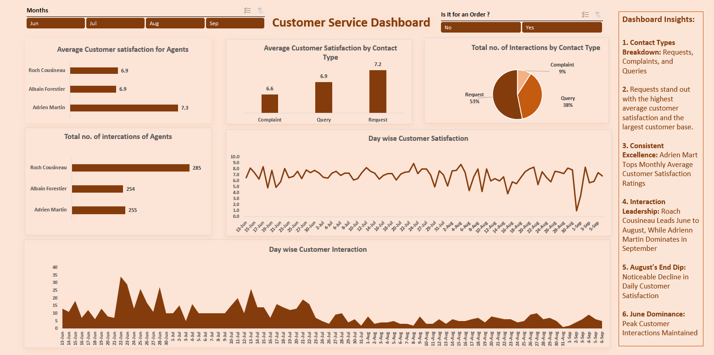

Imagine you're running a business. Customers are the lifeblood of your company, and keeping them happy is crucial. That's where customer service comes in. It's the magic touch that turns satisfied customers into loyal fans. But how do you know if your customer service is hitting the mark? That's where this project comes in.
Objective
This Excel project is about creating a customer service dashboard that sheds light on what's really happening in the world of your customer support team. It's like having a superhero X-ray for your customer service, letting you see strengths, weaknesses, and opportunities to improve.
Chapters
- Customer Satisfaction: We peered into the minds of the customers, using star ratings and feedback to gauge their happiness.
- Agent Performance: We tracked the customer service heroes, seeing who consistently delivered smiles and solved problems like a champ.
- Interaction Channels: We examined how customers reach out, whether it's by phone, email, or live chat, to see which methods make them happiest.
- Top Trends: We identified patterns and insights hidden within the data, like which days see the most interactions or which issues cause the most frowns.
Key Insights
- Customer Champions:
- Requests shine: Not only did they win big with a 7.2 out of 10 satisfaction rating, but they also snagged the most customers, with a whopping 53% choosing them. Clearly, Requests keep their fans smiling!
- Adrien aces it: This superstar agent consistently crushes satisfaction goals, boasting a monthly average of 7.3 out of 10. No wonder customers love him!
- Interaction All-Stars:
- Summer surge: June saw the most interactions. Was it a hot product launch or just the summer heat driving things up?
- Seasonal shifts: Roach Cousineau ruled the summer months, handling the June-August rush like a champ. Adrien took the crown in September, proving this team has all seasons covered!
- Deeper Dives:
- August blues: In August, daily satisfaction took a noticeable dip. Time to investigate what happened and turn those frowns upside down!
Conclusion
This customer service dashboard is your secret weapon for understanding your customers and delivering the kind of service that makes them sing your praises. Use it to identify areas for improvement, celebrate your star agents, and keep your customers coming back for more. Remember, happy customers are loyal customers, and loyal customers are the key to business success!
See Code Here!
